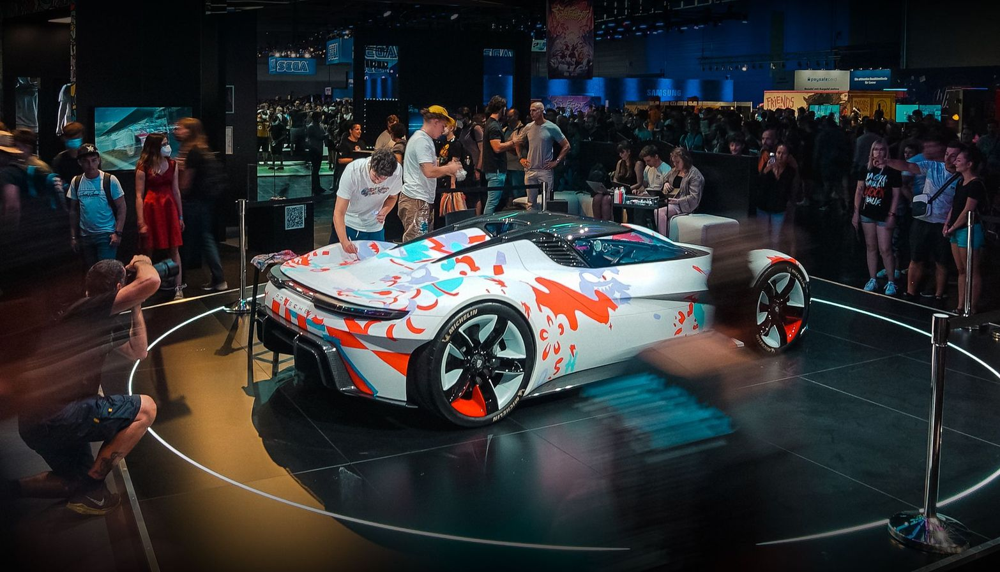
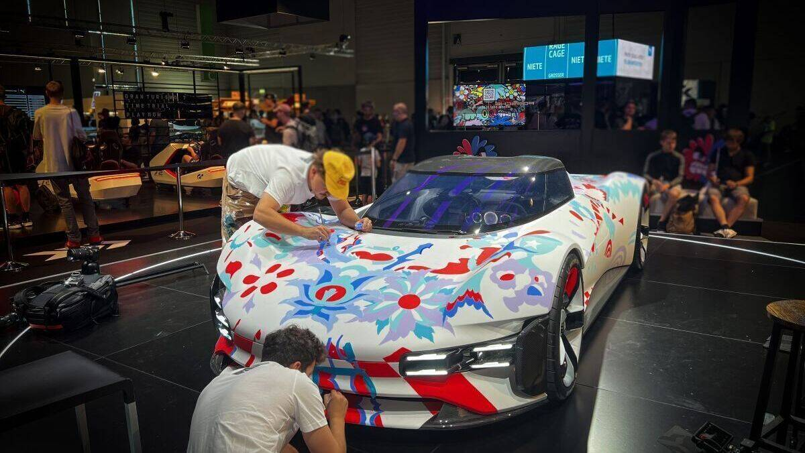
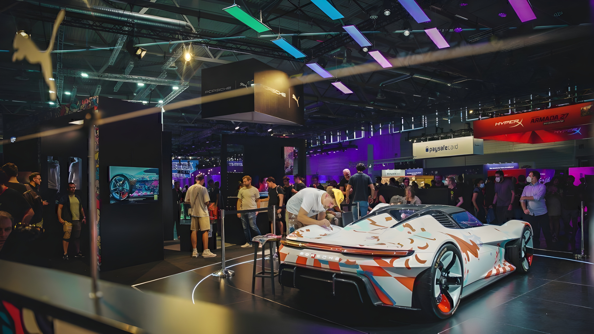
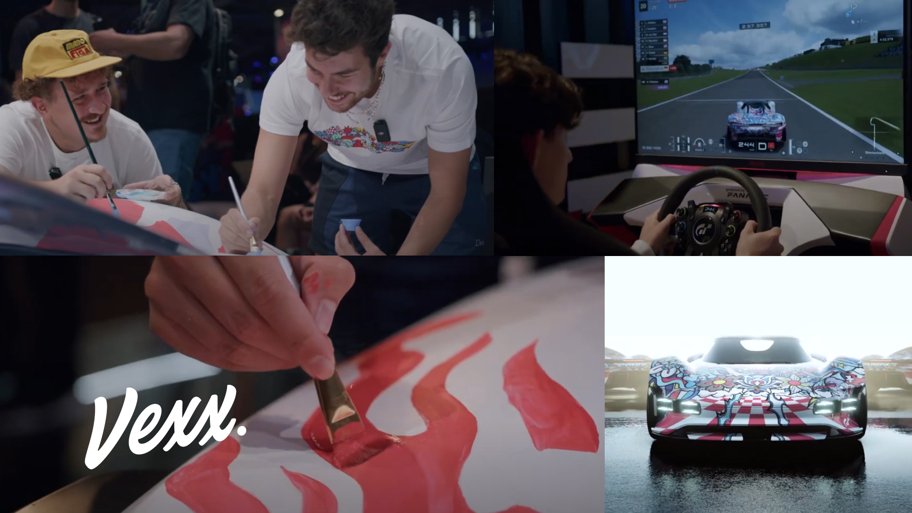
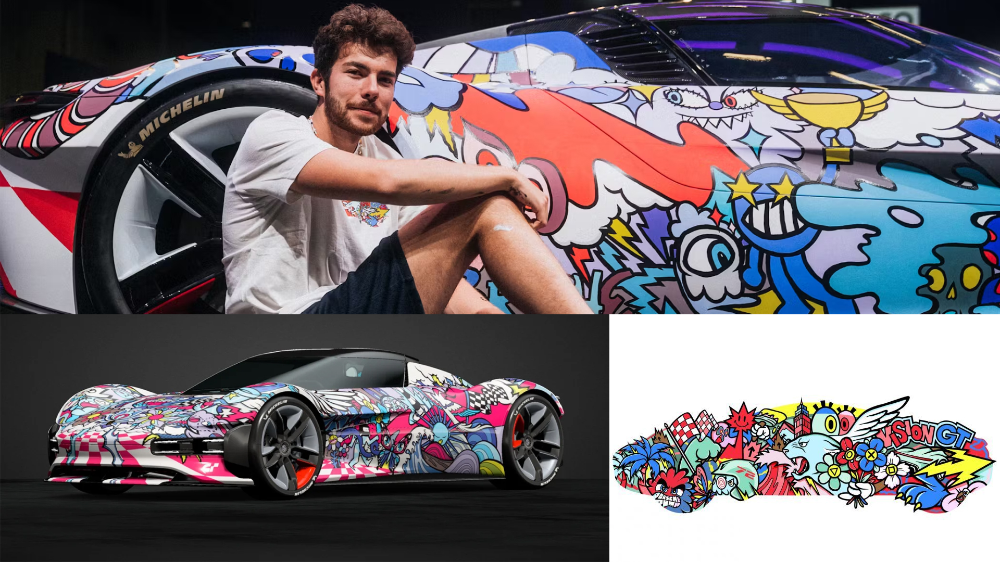

Live Street-Art:
Porsche Vision GT
by VEXX.
Watch Video
Auf der Gamescom 2022 bemalte Künstler VEXX den Porsche Vision GT live in seinem Street-Art-Stil — das erste Porsche-Modell, das für ein Videospiel entwickelt wurde und exklusiv in Gran Turismo 7 spielbar ist. Als Artdirector überwachte ich die Printfiles und Reinzeichnungen und gestaltete den Messestand kreativ, um ein einzigartiges Erlebnis zu schaffen, in enger Zusammenarbeit mit Team, Messebauer und Kunde.
At Gamescom 2022, artist VEXX transformed the Porsche Vision GT live in his signature street-art style, creating the first Porsche model made for a video game, playable exclusively in Gran Turismo 7. I managed print files and final artwork, and creatively staged the exhibition booth to deliver a unique visitor experience, collaborating closely with my team, the booth builder, and the client.




